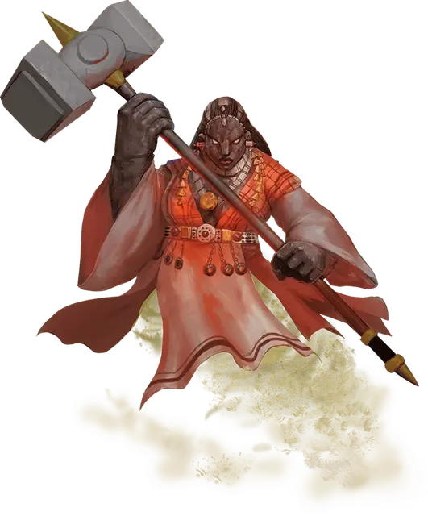

Дао
Dao
Большой Элементаль, нейтрально-злой

Класс Доспеха 18 (природный доспех)
Хиты 187 (15к10 + 105)
Скорость 30 футов, летая 30 футов, копая 30 футов
| мод | спас | ||
|---|---|---|---|
| СИЛ | 23 | +6 | +6 |
| ЛОВ | 12 | +1 | +1 |
| ТЕЛ | 24 | +7 | +7 |
| мод | спас | ||
|---|---|---|---|
| ИНТ | 12 | +1 | +5 |
| МДР | 13 | +1 | +5 |
| ХАР | 14 | +2 | +6 |
Иммунитет к состояниям окаменение
Чувства тёмное зрение 120 футов, пассивное Восприятие 11
Языки Терран
Опасность 11 (7200 опыта)
Бонус мастерства +4
Среда обитания Подземье
Особенности
Скольжение сквозь землю. Дао может перемещаться, копая, сквозь немагические и необработанные землю и камень. При этом дао не беспокоит материал, через который перемещается.
Элементальная гибель. Если дао умирает, его тело распадается на кристаллическую пыль, оставляя только снаряжение, которое дао носил и нёс.
Врождённое колдовство. Базовой характеристикой дао является Харизма (Сл спасброска от заклинания 14, +6 к попаданию атаками заклинаниями). Он может накладывать следующие заклинания, не нуждаясь в материальных компонентах:
• Неограниченно: изменение формы камня [stone shape], обнаружение зла и добра [detect evil and good], обнаружение магии [detect magic]
• 3/день каждое: движение почвы [move earth], создание прохода [passwall], языки [tongues]
• 1/день каждое: воображаемый убийца [phantasmal killer], газообразная форма [gaseous form], каменная стена [wall of stone], невидимость [invisibility], призыв элементаля [conjure elemental] (только земляной элементаль), уход в иной мир [plane shift]
Устойчивый. Дао совершает с преимуществом спасброски Силы и Ловкости против эффектов, сбивающих его с ног.
Вариант: Способности гениев. Гении обладают различными магическими способностями, включая заклинания. Некоторые владеют столь великой силой, что могут менять обличья или изменять природу реальности.
Маскировка. Некоторые гении могут скрыть свою истинную природу, наложив на себя иллюзию сходного по сложению другого существа. Такие гении могут неограниченно накладывать заклинание маскировка [disguise self], зачастую с увеличенной длительностью. Более могущественные гении могут накладывать заклинание истинное превращение [true polymorph] от одного до трёх раз в день, возможно, с увеличенной длительностью. Такие гении могут менять только собственный облик, и крайне редко могут накладывать подобные заклинания на других существ или предметы.
Желания. Среди смертных ходят легенды о гениях, исполняющих желания. Но лишь могущественнейшие из гениев, например, их знатные представители, могут это сделать. Те из них, кто обладают такой силой, могут даровать исполнение от одного до трёх желаний любому существу, кроме другого гения. Если гений уже исполнил свой предел желаний, он не сможет сделать это вновь в течение некоторого времени (обычно 1 год), и, согласно законам вселенной, один и тот же гений может потратить свой лимит желаний на другое существо только один раз в жизни этого существа.
Чтобы гений исполнил желание, существо должно сформулировать его, находясь в 60 футах от гения. После этого гений накладывает заклинание исполнение желаний [wish], воспроизводящее эффект. Изворотливые по своей природе гении могут попытаться извратить желание, воспользовавшись несовершенством его формулировки. Как правило, искажение формулировок гении оборачивают себе на пользу.
Действия
Мультиатака. Дао совершает две атаки кулаком, либо две атаки молотом.
Кулак. Рукопашная атака оружием: +10 к попаданию, досягаемость 5 футов, одна цель. Попадание: Дробящий урон 15 (2к8 + 6).
Молот. Рукопашная атака оружием: +10 к попаданию, досягаемость 5 футов, одна цель. Попадание: Дробящий урон 20 (4к6 + 6). Если цель — существо с размером не больше Огромного, она должна преуспеть в проверке Силы Сл 18, иначе будет сбита с ног.
Описание
Дао — жадные и злобные гении со Стихийного Плана Земли. Они носят ювелирные украшения из драгоценных камней и редких металлов. Во время полёта нижняя часть их тел становится столбом вращающегося песка. Дао не испытывает счастья, если ему не завидуют другие дао.
Всё, что блестит. Дао обитают на Стихийном Плане Земли в комплексах переплетающихся туннелей и пещер, пронизанных мерцающими рудами. Эти лабиринты постоянно расширяются, поскольку дао роют и перестраивают своё пространство. Дао нет дела до бедности и несчастий всех остальных. Подобно тому, как смертные используют пряности, дао могут посыпать свою пищу перемолотыми в пыль золотом и драгоценными камнями.
Властители земли. Дао никогда не помогает смертным, если только не может получить от них что-то взамен, желательно сокровище. Среди гениев дао общаются и торгуют с ифритами, но презирают джиннов и маридов. Другие расы, населяющие Стихийный План Земли, сторонятся дао, которые постоянно ищут новых рабов для разработки лабиринтов их парящих каменных островов.
Гордые рабовладельцы. Дао достают лучших рабов, которых только можно купить, и заставляют их работать в опасных подземных мирах, дрожащих от землетрясений.
Сколь сильно дао любят порабощать других, столь же сильно они ненавидят, когда порабощают их самих. Известно, что могущественные волшебники заманивают дао на Материальный План и заключают их в драгоценные камни или железные фляги. К несчастью для дао, их жадность позволяет магам довольно легко обманывать их и заставлять себе служить.
См. дополнительно статью: "Бестиарий: Гении"